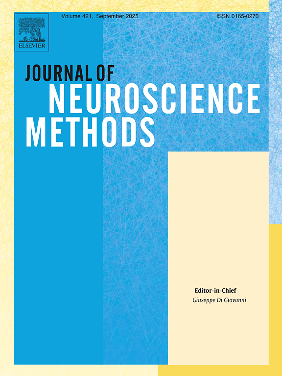
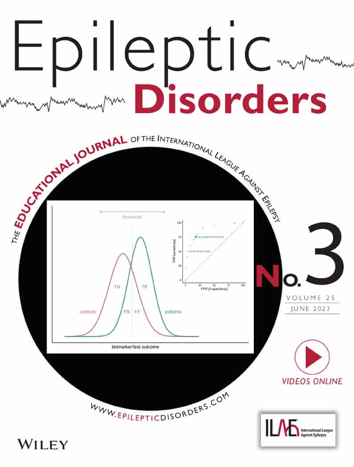

Towards the automated detection of interictal epileptiform discharges with magnetoencephalography Raquel Fernández-Martín, Odile Feys, Elodie Juvené , Alec Aeby, Charline Urbain, Xavier De Tiège, Vincent Wens J Neurosci Methods. 2024 Mar;403:110052. doi: 10.1016/j.jneumeth.2023.110052. Epub 2023 Dec 25. 
Precision medicine: Vinpocetine as a potential treatment for GABRG2-related epilepsy Mandelenaki D, Juvené E , Lederer D, Aeby A. Epileptic Disord. 2023 Jun;25(3):383-389. doi: 10.1002/epd2.20015. Epub 2023 May 25. 